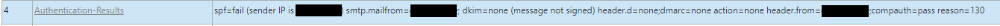
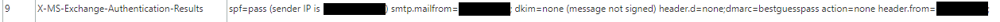
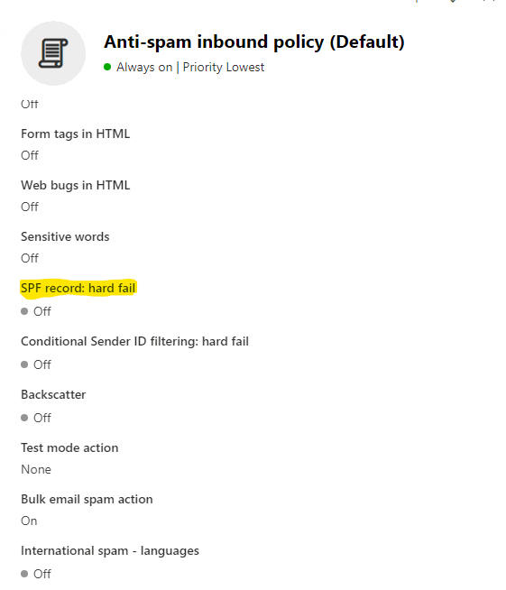

Graph and PowerShell Blog
Graph and PowerShell BlogScenario
Company A - Has an on-prem Exchange environment in Hybrid mode, but chooses 'Centralized Mail-flow' so that all mails are sent via the on-prem Exchnage servers. As a result of this setup they do not add the Microsoft addresses to their SPF record.
Company B - Also has a hybrid setup but mail-flow is set to all go through O365. In addition to this they also have O365 mail filters enabled. Both companies are based in the same country.
Problem
When Company A sends mails to Company B they always end up in O365 Quarantine. When reviewing the Internet headers we see that the SPF record has failed despite 'centralized mail-flow' being enabled.
Cause
While in theory the emails coming from Company A should exit via the on-prem Exchange servers, instead if the two tennants in O365 reside in the same datacenter then the mail is routed via O365. So the SPF record will fail and the mail will go to Quarantine, but only if the recipient domain has legacy mail filters enabled.

↑ SPF fails because spf.protection.outlook.com is not present.
Resolution
While both companies had issues with the setup, Microsoft Support sided with company A, saying that if the legacy mail filters (in particular the MarkAsSpamSpfRecordHardFail filter) were disabled then the mails would not go to quarantine. This is technically correct but with a couple of caveats, first the Internet headers still show an error, with Microsoft adding an extra authentication field to bypass the error. Secondly the Microsoft documentation for Hybrid setup says to add the Microsoft addresses to your SPF file, it does not mention anything about exceptions for centralized mail-flow.

↑ Added field, X-MS-Exchange-Authentication-Results, shows the SPF record passing.
This was a long running case with Microsoft Support but out of it at least came information on no longer using legacy mail filters. I kinda think if a feature is no longer to be used then really it should also be removed from the GUI and not hidden deep in the documentation, but in the end the issue did at least get resolved. I recommend running the ORCA PowerShell report to keep track of all best practices for O365 mail-flow.

↑ SPF record: hard fail should not be enabled under M365 Defender > Policies & Rules > Threat Policies > Anti-spam Policies.